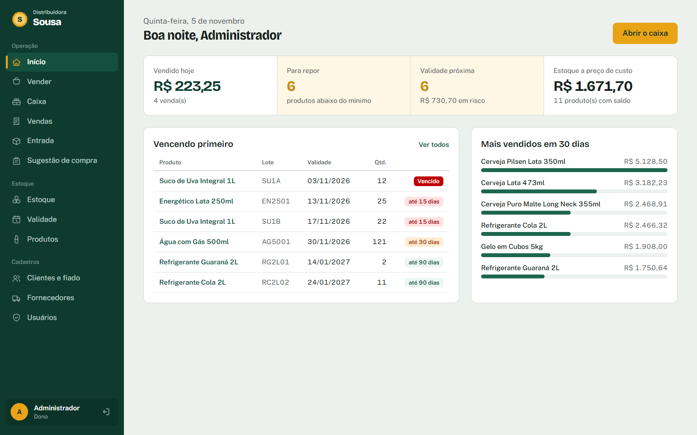
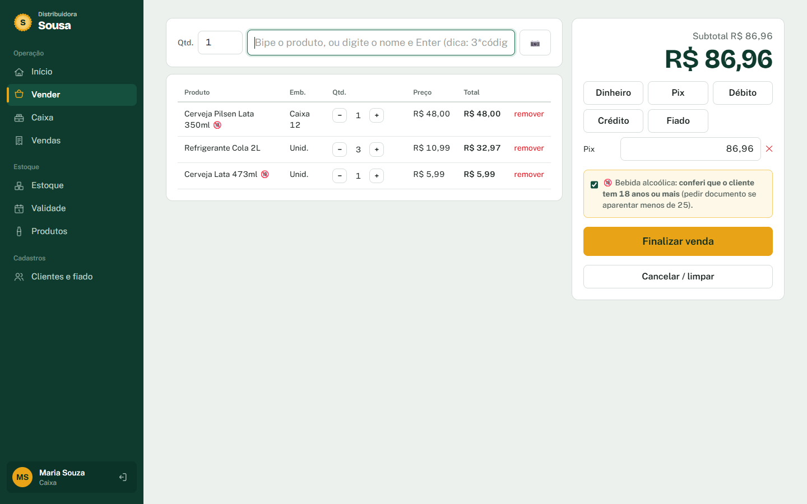
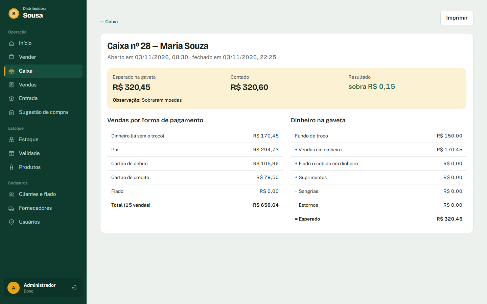
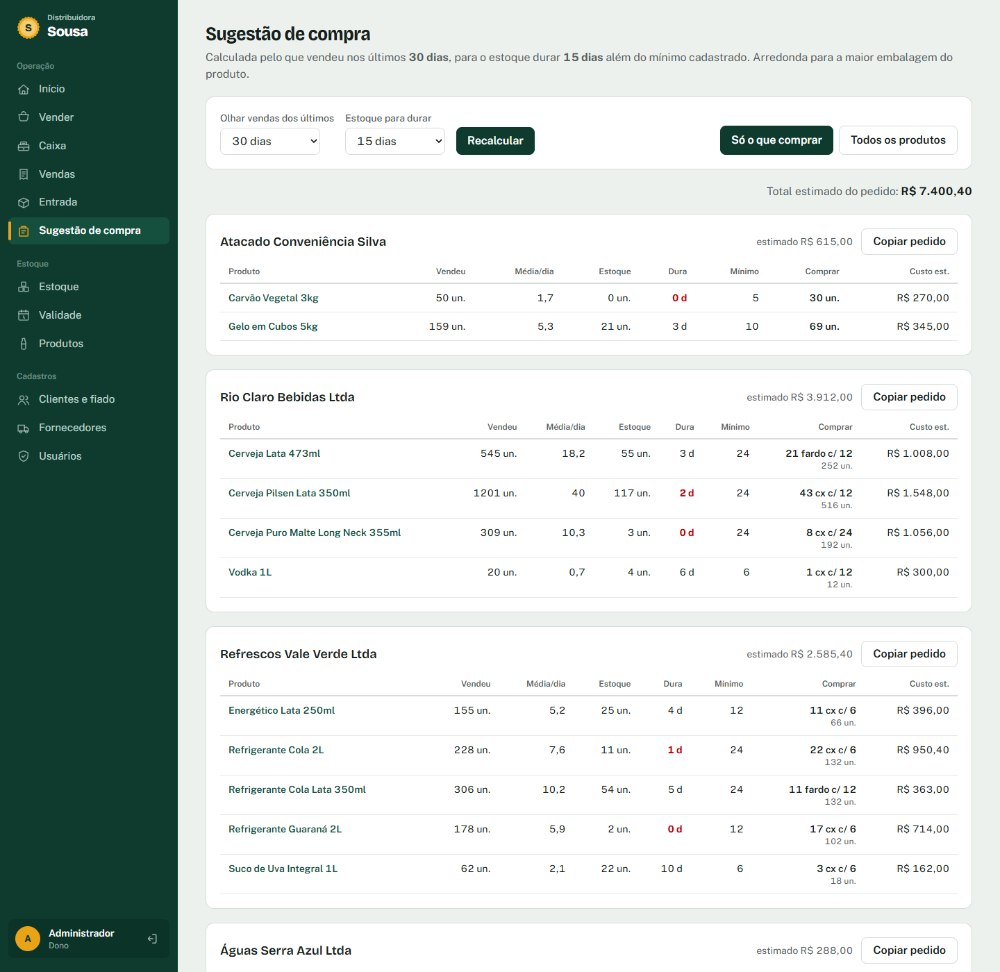

Sistema web · Varejo
Distribuidora Sousa
Sistema de estoque e balcão para uma distribuidora de bebidas, pensado para rodar num mini-PC dentro da loja e ser usado no caixa e no celular.
- Estoque por lote e validade (FEFO): sai primeiro o que vence primeiro; vencido nunca é vendido.
- Venda no balcão com leitor de código de barras e QR, troco, Pix, cartão e fiado.
- Caixa com fechamento cego: o operador conta sem ver o esperado; o gerente vê sobra ou falta.
- Importação da NF-e do fornecedor com conferência cega e comparação nota × contado.
- Sugestão de compra pelo giro, arredondada na caixa e separada por fornecedor.
- Regras testadas com Vitest num PostgreSQL em memória e verificadas a cada envio (GitHub Actions).
Demo com dados fictícios, reiniciada todo dia. Entre com um clique em qualquer perfil.



